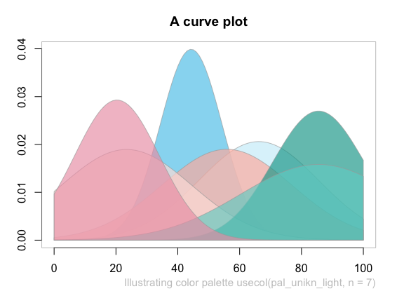
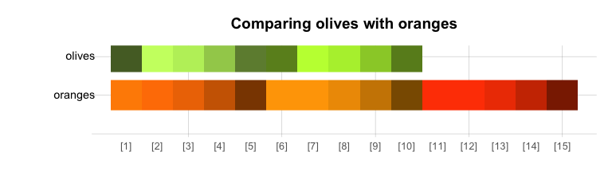

Enabling corporate design elements in R
The unikn package provides useful color functions — by defining dedicated colors and color palettes, and commands for finding, changing, viewing, and using them — and styled text elements (e.g., for marking, underlining, or plotting colored titles) in R. The package’s pre-defined range of colors and text decoration functions is based on the corporate design of the University of Konstanz (see link for details), but can easily be adapted and extended to other purposes or institutions.
Overview
Institutions devise corporate designs (CDs) for creating and maintaining a consistent impression in presentations and publications. Even when writing an article or thesis, it makes sense to define some graphical elements (e.g., a color scheme) and use them consistently throughout the report.
The unikn package facilitates the use of corporate design elements for R users. It currently contains dedicated colors and color palettes of the University of Konstanz, plus many additional color palettes from other institutions. In addition, unikn provides a range of color functions that make it easy to define, modify, find, and use colors in R. While this renders the use of default specifications simple and straightforward, experienced users can apply the tools in a flexible and creative fashion (e.g., for designing new color palettes and using them in scientific visualizations).
The unikn package currently provides five types of objects and functions:
Pre-defined colors and color palettes (e.g.,
Seeblauandpal_unikn);Functions for viewing and comparing colors (
seecol()), for using or changing color palettes (usecol()), and for demonstrating color palettes (demopal());Functions for creating new color palettes (
newpal()), for finding similar colors (simcol()), and for searching color names (grepal());Functions for plotting graphical objects (e.g., boxes and frames);
Functions for plotting styled text elements (e.g., highlighting and underlining text).
Essentially, the unikn package began by defining some colors, but has now grown into a toolbox for addressing color- and plotting-related tasks in R. As we had fun creating it, we hope that you enjoy using it as well!
Installation
The latest release of unikn is available from CRAN at https://CRAN.R-project.org/package=unikn:
install.packages('unikn') # install from CRAN client
library('unikn') # loads the packageThe current development version can be installed from its GitHub repository at https://github.com/hneth/unikn/:
# install.packages('devtools') # install pkg
devtools::install_github('hneth/unikn')Colors and color palettes
The unikn contains two categories of color palettes:
- 16 palettes implementing the colors of the University of Konstanz’s corporate design
- 24 additional color palettes from various institutions
The colors of Konstanz University
Originally, the unikn package primarily provided the 16 color palettes of the University of Konstanz:
seecol("all_unikn")In 2014, the University of Konstanz introduced a highly recognizable CD. Its key component is the ubiquitous use of a Seeblau color and a corresponding color palette that blends various shades of Seeblau (in boxes, lines, and other graphical elements) with text (in black-and-white).
Basic color palette
The default unikn color palette pal_unikn combines shades of pal_seeblau and pal_grau with the base R colors “white” and “black” into a diverging, symmetrical palette (of 11 colors):
seecol(pal_unikn)
A shorter version (with 10 colors) and an alternative (with more muted colors for PowerPoint presentations) are provided as pal_unikn_web and pal_unikn_ppt, respectively. (Inspect seecol("unikn_basic") or see the corporate design specifications for details.)
Special color palettes
Several more specialized color palettes combine the elements of nine color hues. The preferred colors are contained in palette pal_unikn_pref:
seecol(pal_unikn_pref)Each distinct hue is exported as a named color (e.g., Pinky) and a corresponding gradient color palette (e.g., pal_pinky). (Inspect seecol("grad_all") or the Excel file Colours for complex graphics for details.)
unikn exports these color palettes as data frames that can be accessed by number, value, or name:
# Accessing colors from palettes:
pal_unikn # color palette of 11 colors
pal_unikn[3] # preferred (named) color 3
pal_unikn[[3]] # color value 3: #59C7EB"
pal_unikn["seeblau3"] # color by nameAdditional color palettes
In addition to the 16 specific color palettes of the University of Konstanz, unikn currently provides color palettes of the following institutions:
-
Caltech:
caltech_pal_1,caltech_pal_2,caltech_pal_3 -
ETH Zurich:
eth_pal,eth_pal_light,eth_pal_grey -
Humboldt University Berlin:
hu_pal_1,hu_pal_2
-
Max Planck Society:
mpg_pal -
University of Freiburg:
uni_freiburg_br,uni_freiburg_blue,uni_freiburg_grey,uni_freiburg_info -
University of Göttingen:
uni_goettingen_1,uni_goettingen_2,uni_goettingen_3 -
University of Konstanz:
uni_konstanz,uni_konstanz_pref -
Princeton University:
uni_princeton_0,uni_princeton_1,uni_princeton_2 -
University of Regensburg:
uni_regensburg_1,uni_regensburg_2,uni_regensburg_3
# Inspect additional/alternative color palettes:
seecol("add")
These palettes are exported (as named vectors), documented (to credit their contributors and sources), and can easily be used and modified by the R community (e.g., in visualizations).
Call for contributions
We are currently expanding the range of color palettes from other institutions:
Collecting color palettes
- Are you using unikn to create your own color palettes?
If so, please let us know (e.g., by posting on this GitHub issue)!
We collect color palettes from other institutions to make them available to R users in future versions of unikn.
To enable us to verify and provide appropriate credit to your contributions, please provide us with the following information:
- your code (e.g., the
newpal()command creating your color palette),
- your source (e.g., some URL with color definitions),
- your name and some contact information (e.g., an Email address).
We’re looking forward to your inputs and contributions!
Color-related functions
Beyond defining colors and color palettes, the unikn package provides a range of tools for viewing and manipulating colors:
Two main functions —
seecol()andusecol()— provide a simple interface for viewing and using color palettes.Additional color functions (i.e.,
simcol(),grepal(),newpal(),shades_of(), orac()) provide auxiliary functionality (for finding similar colors and color names, creating new color palettes and color gradients, or adjusting transparency).
Seeing color palettes with seecol()
The seecol() function enables either inspections of an individual color palette or comparisons between multiple color palettes.
Viewing a color palette
Using seecol() on an individual color palette provides a quick overview over its colors and details:
# Inspect an individual color palette:
seecol(pal = eth_pal, # a color palette / list of palettes / keyword
col_brd = "white", lwd_brd = 5, # color and width of borders
main = "Colors of the ETH Zurich") # plot title 
Comparing color palettes
When seecol() is used with a recognized keyword or a list of color palettes, the function displays a comparison between them. When only some colors of a color palette are requested, the seecol() and usecol() functions provide reasonable subsets of a unikn palette:
# Compare a list of (scaled) color palettes:
seecol(pal = "grad_all", n = 3,
col_brd = "black", lwd_brd = .5,
main = "Color gradient palettes (scaled to n = 3)")
Using color palettes with usecol()
Colors and color palettes in R come in various types (e.g., as named colors, RGB values or Hex codes) and forms (e.g., as data frames or vectors). The usecol() function provides a generic wrapper for changing (e.g., mixing and re-scaling) and using color palettes. This allows using colors in base R and most other R packages. For instance, we can easily use colors in combination with
- the
barplot()function of the grDevices package:
# Mix some colors into a new palette:
my_pal <- usecol(c(Seeblau, "white", Pinky), n = 9)
# Use color palette:
barplot(1/sqrt(1:9), col = my_pal)
- the
image()function of the graphics package:
# Data:
x <- y <- seq(-4 * pi, 4 * pi, len = 15)
r <- sqrt(outer(x^2, y^2, "+"))
# Mix a palette with a named color:
my_col <- usecol(c(Seegruen, "white"), n = 7)
# Image:
image(z = cos(r^2) * exp(-r/10),
col = my_col, axes = FALSE)- the
ggplot()function of the ggplot2 package:
# Mix a color gradient:
my_col <- usecol(c(Bordeaux, "white", Petrol), n = 50)
# Plot (with ggplot2):
library(ggplot2)
ggplot(my_data, aes(x = X, y = Y, fill = Group)) +
geom_area() +
scale_fill_manual(values = my_col) +
theme_void() +
theme(legend.position = "none")
Illustrating color palettes
The demopal() function provides a quick illustration of a pre-defined or modified color palette:
demopal(usecol(uni_princeton_1, n = 7), # use a modified color palette
type = "curve", seed = 2) # reproducible randomness
Creating color palettes with newpal()
The newpal() function allows creating new color palettes (as data frames or vectors, with optional color names). Whereas unikn was developed in an academic context, color palettes for other entities and purposes can easily be created. For instance, let’s define a color palette of the well-known Google logo in 3 steps:
Choose some colors (from named R colors, or by RGB/HEX/HCL values, e.g., from sites like https://www.schemecolor.com).
Define the colors (and optional color names) as R vectors (of type character).
Use the
newpal()command to define a new color palette.
We can now use the new palette in visualizations (e.g., inspect it with the seecol() function, use it in visualizations, or modify it further with the usecol() function):
# 1. Choose colors:
# Google logo colors (from <https://www.schemecolor.com/google-logo-colors.php>)
# 2. Define colors and color names (as vectors):
color_google <- c("#4285f4", "#34a853", "#fbbc05", "#ea4335")
names_google <- c("blueberry", "sea green", "selective yellow", "cinnabar")
# 3. Define color palette:
pal_google <- newpal(color_google, names_google)
# Inspect color palette:
seecol(pal_google,
col_brd = "white", lwd_brd = 8,
main = "Colors of Google")
See the vignette on Institutional colors for additional examples of creating color palettes.
Finding colors
When creating visualizations, we often face two search situations:
- Finding colors that look similar to a given color
- Finding colors that match particular names
The simcol() and grepal() functions of unikn address both situations.
Finding similar colors with simcol()
- Which R colors are similar to the “Princeton orange” of the
uni_princeton_0palette?
simcol(col_target = uni_princeton_0["Princeton orange"], tol = 30)#> Princeton orange chocolate chocolate1 chocolate2
#> "#E87722" "chocolate" "chocolate1" "chocolate2"
#> chocolate3 darkgoldenrod3 peru sienna3
#> "chocolate3" "darkgoldenrod3" "peru" "sienna3"By default, simcol() considers all unique named colors() of R, but its search range can be adjusted by its col_candiates, tol, and distinct arguments.
Finding color names with grepal()
The grepal() function allows finding colors by matching their name to a pattern.
Specifically, grepal(pattern, x) searches a color palette x (i.e., a vector of color names or data frame of named colors) for elements that match a pattern and returns those elements (colors) that match the pattern. The pattern can be a regular expression.
By default, grepal() searches the 657 named colors provided by colors() in base R. To make the grepal() more flexible, its pattern argument can use regular expressions:
# Find colors matching a pattern:
deep_purple <- grepal(pattern = "deep|purple", plot = FALSE)
# See color palette:
seecol(deep_purple,
col_brd = "white", lwd_brd = 2,
main = "Finding 'deep' or 'purple' colors")
Providing a list of color palettes to the pal argument of seecol() allows comparing multiple color palettes:
# Find colors matching some term(s):
olives <- grepal("olive", plot = FALSE)
oranges <- grepal("orange", plot = FALSE)
# See color palettes:
seecol(pal = list(olives, oranges),
pal_names = c("olives", "oranges"),
main = "Comparing olives with oranges")
See the vignette on Colors and color functions and Color recipes for additional examples.
Text decorations
Beyond colors and color functions, unikn provides functions for plotting graphical elements (like boxes) and styled text elements (with lines or background decorations). By default, the text-decoration functions assume that you want to add styled text to an existing plot, unless the new_plot argument specifies a type of plot to be generated. As the use of these functions is explained in detail in the vignette on Text boxes and decorations, we only provide some examples here.
Mark
The mark() function allows emphasizing text by plotting it with colored background (to provide the functionality of “Markieren”):
mark(labels = c("Markieren", "ist ein Bestandteil", "von Studieren."),
x = 0, y = .8, y_layout = .03, cex = 1.5, new_plot = "slide")
Underline
The uline() function allows emphasizing text by plotting it with colored underlining (to provide the functionality of “Unterstreichen”):
uline(labels = c("Linear", "Authentic", "Flexible", "Open", "Practical"),
x = .05, y = .9, y_layout = "even", cex = 1.1, font = 2, new_plot = "slide")
Post
The post() function allows adding text to a rectangular xbox (to provide the functionality of “Merken”):
xbox(col = usecol(pal_seeblau[[5]]), dim = c(2, 2))
post(labels = c("Für eine", "Kultur der", "Kreativität"), x = .1, y = .8, cex = 1.4, font = 2)
The color and font parameters can be adjusted to obtain different looks:
post(labels = c("creative.", "together"), new_plot = "xbox",
y_layout = .02, cex = 2, font = c(1, 3),
col_bg = pal_seegruen[[1]], col = c(Petrol, Pinky))
Headings
The heading() function is a convenient wrapper around mark:
heading(labels = c("pa-", "ra-", "die-", "sisch"))
URLs
Finally, the url_unikn() function allows formatting URLs the uni.kn way:
my_url <- url_unikn("https://www.uni-konstanz.de/") # input URL as copied from web browser
post(labels = my_url, x = .2, y = .1, font = 4, new_plot = "xbox")
Using custom color palettes
All unikn color palettes and user-generated color palette (e.g., defined by newpal() or usecol()) can be used for graphical annotations. For example:
- Using the color palettes of academic institutions (see the vignette on Institutional colors) with text decoration functions:

- Using the color palette
pal_google(defined above):

See the vignette on Text boxes and decorations for additional examples.
Caveats
Please note the following caveats:
Plotting text (i.e., graphically rendering characters) is rarely a good idea. It typically doesn’t scale (when changing the size of images) and cannot be recognized automatically (e.g., copied, indexed, or scraped). Hence, the corresponding unikn functions should only be used in contexts in which no better solutions are available or practical (e.g., when specifically creating images, or adding annotations to graphs).
Our templates — just like all others — are subject to constraints and limitations. As a standard installation of R lacks the “Theinhardt” fonts, we can only mimic the official design specifications (in Arial, sans serif). Nevertheless, the unikn package helps preventing common mistakes by novices (e.g., boxes or lines extending beyond text, or step-functions in multi-line titles) and can be customized and improved by expert users.
Overall, the unikn functions can be useful for solving color-related tasks and plotting graphical elements (e.g., boxes, logos, etc.). Ideally, it should help you in creating a stylish and recognizable design for your presentations and visualizations.
ToDo

The unikn package is work in progress. We are currently working on:
- Adding institutional color palettes
- Additional templates and themes (for plots and text decoration)
Please comment on GitHub or contact us if you need additional features or want to help creating them.
Resources
The following versions of unikn and corresponding resources are currently available:
| Type: | Version: | URL: |
|---|---|---|
| A. unikn (R package): | Release version | https://CRAN.R-project.org/package=unikn |
| Development version | https://github.com/hneth/unikn/ | |
| B. Online documentation: | Release version | https://hneth.github.io/unikn/ |
| Development version | https://hneth.github.io/unikn/dev/ |
Contact
Please note and report any unikn-related issues at https://github.com/hneth/unikn/issues. We are looking forward to your feedback, comments, or questions.
Copyrights

The University of Konstanz’s Corporate Design (CD) was created by Strichpunkt GmbH and the University of Konstanz in 2014. The unikn package authors are members of the research group Social Psychology and Decision Sciences (SPDS) at the University of Konstanz. We facilitate access to CD elements for fellow users of R (e.g., for creating scientific visualizations), but all copyrights on the design remain with the original copyright holders.
We aim for an authentic representation of a highly-specified corporate design. While rigid specifications help to maintain coherence and consistency, they also tend to cause frustration in expert users. As the design has been developed in a flexible way that allows for individual elements to be modified as needed, we allow for some liberties, mostly by relaxing some restrictions. Examples include:
- enabling finer color gradients and arbitrary combinations of color palettes (by applying the
seecol()andusecol()functions to color palettes);
- providing a designated
Signalcolor (frompal_signal);
- using the spelling “color” (rather than “colour”) throughout the unikn package.
License


unikn by Hansjörg Neth and Nico Gradwohl is licensed under a Creative Commons Attribution-ShareAlike 4.0 International License. (Based on a work at https://github.com/hneth/unikn).
Citation and References
To support our efforts, please cite the unikn package in derivations or publications:
- Neth, H., & Gradwohl, N., (2022). unikn: Graphical elements of the University of Konstanz’s corporate design.
Social Psychology and Decision Sciences, University of Konstanz, Germany.
Computer software (R package version 0.7.0, November 10, 2022).
Retrieved from https://CRAN.R-project.org/package=unikn.
doi 10.5281/zenodo.7096191
A BibTeX entry for LaTeX users is:
@Manual{,
title = {unikn: Graphical elements of the University of Konstanz's corporate design},
author = {Hansjörg Neth and Nico Gradwohl},
year = {2022},
organization = {Social Psychology and Decision Sciences, University of Konstanz},
address = {Konstanz, Germany},
note = {R package (version 0.7.0, November 10, 2022)},
url = {https://CRAN.R-project.org/package=unikn},
doi = {10.5281/zenodo.7096191},
}The copyrights to all uni.kn designs remain with their original creators:
- The University of Konstanz’s corporate design (Version 1.6, September 2015)
- Colours for complex graphics
- Strichpunkt GmbH, ‒ strichpunkt-design.de
[File README.md updated on 2022-11-30.]